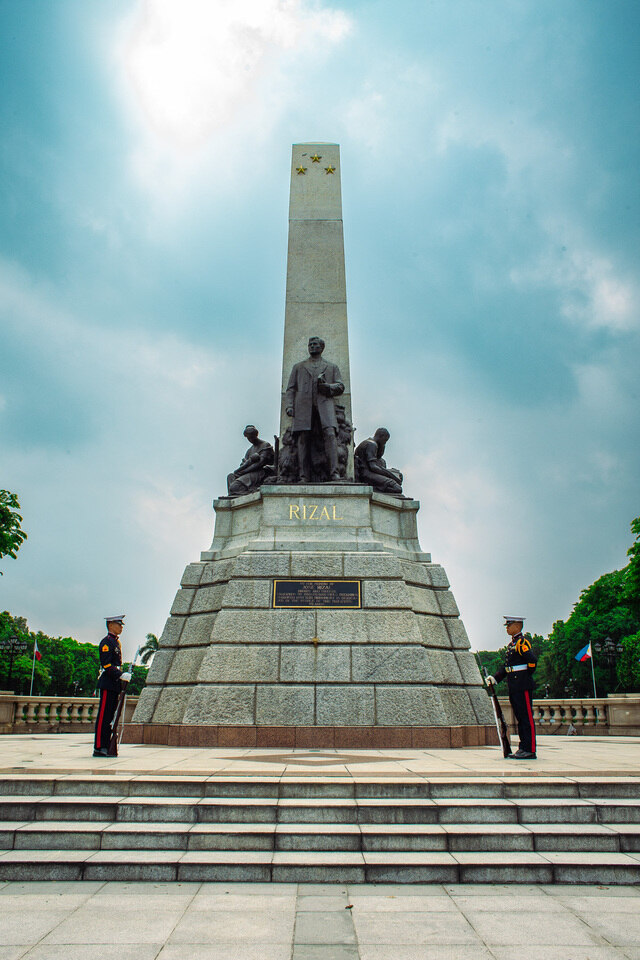
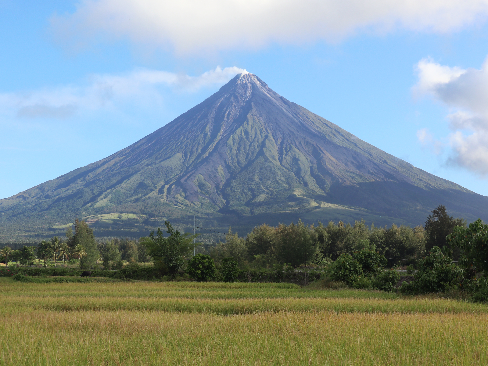
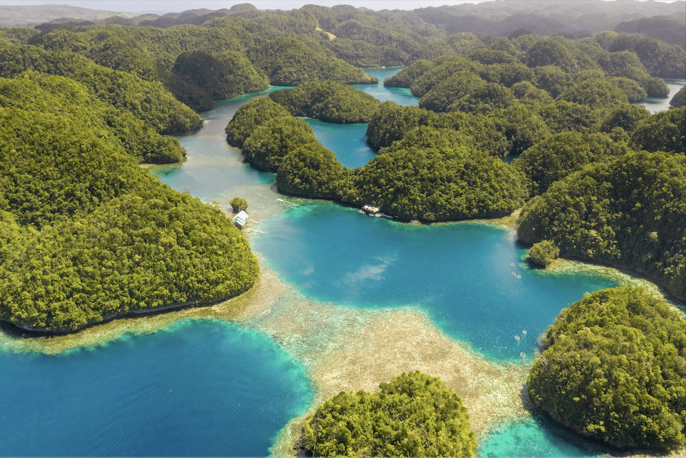
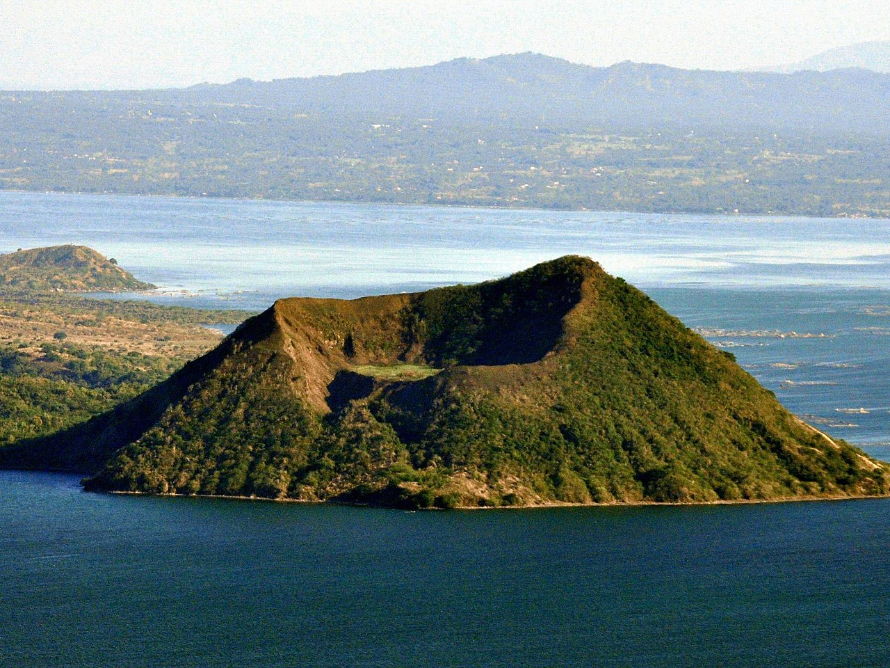
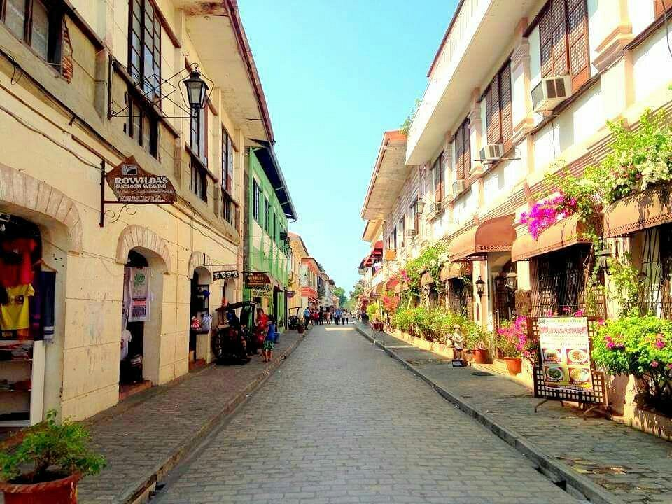
Rizal Park, also known as Luneta Park, is located in the City of Manila, Metro Manila (National Capital Region or NCR), Luzon, Philippines. It lies along Roxas Boulevard, facing Manila Bay, and covers approximately 58 hectares, making it one of the largest urban parks in Asia
Mayon Volcano is located in the province of Albay, Bicol Region (Region V), in Luzon, Philippines. It is famous for its nearly perfect cone shape and is one of the country’s most active volcanoes. As the centerpiece of Mayon Volcano Natural Park, it attracts thousands of visitors each year who come to admire its scenic beauty, enjoy outdoor activities, and learn about its volcanic history.
Hundred Islands National Park is located in Alaminos City, Pangasinan, Ilocos Region (Region I), in Luzon, Philippines. The park is made up of more than 100 islands scattered across the Lingayen Gulf and is a popular tourist destination for island hopping, swimming, snorkeling, kayaking, and enjoying its beautiful beaches and limestone formations.
Taal Volcano is located in the province of Batangas, CALABARZON (Region IV-A), in Luzon, Philippines. Known as one of the world’s smallest active volcanoes, it sits on Volcano Island within Taal Lake and is famous for its unique geological features, breathtaking scenery, and historical significance as one of the country’s most active volcanoes.
Calle Crisologo is located in Vigan City, Ilocos Sur, Ilocos Region (Region I), in Luzon, Philippines. This historic cobblestone street is renowned for its well-preserved Spanish colonial architecture and offers visitors a glimpse of Philippine history through its ancestral houses, museums, souvenir shops, restaurants, and traditional horse-drawn carriages, making it one of the country’s most iconic cultural heritage destinations.
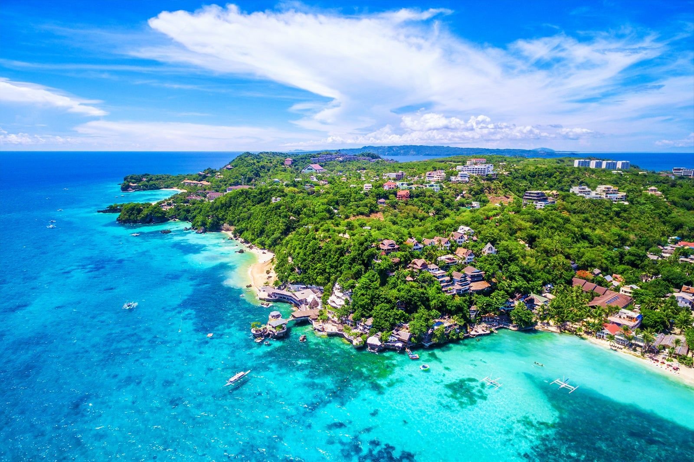 |
 |
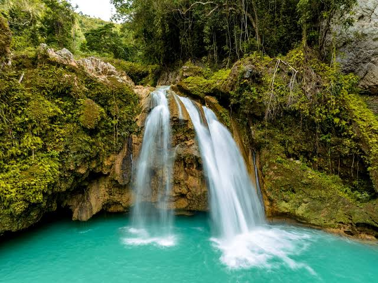 |
 |
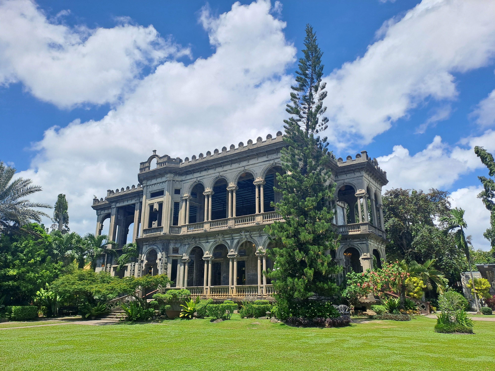 | ||||||||||
Boracay Island (Region VI – Western Visayas) is one of the Philippines’ most famous beach destinations, known for its powdery white sand, crystal-clear waters, and vibrant nightlife. Visitors can enjoy swimming, island hopping, water sports, and breathtaking sunsets along White Beach. |
Chocolate Hills (Region VII – Central Visayas) is a unique geological formation in Bohol consisting of more than 1,200 cone-shaped hills that turn brown during the dry season, resembling giant chocolate mounds. It is one of the country’s most iconic natural attractions and offers scenic viewpoints for visitors. |
Kawasan Falls (Region VII – Central Visayas) is a stunning multi-tiered waterfall in Badian, Cebu, famous for its turquoise waters and lush tropical surroundings. It is a popular destination for swimming, bamboo rafting, and the thrilling activity of canyoneering. |
Kalanggaman Island (Region VIII – Eastern Visayas) is a beautiful island in Leyte known for its long white sandbars, clear blue waters, and peaceful atmosphere. It is an ideal destination for beach lovers, snorkeling enthusiasts, and those seeking a relaxing escape from the city. |
The Ruins (Region VI – Western Visayas) is a historic mansion located in Talisay City, Negros Occidental, often called the “Taj Mahal of Negros.” Built in the early 1900s, its grand Italian-inspired architecture and picturesque gardens make it one of the most visited heritage sites in Western Visayas |
 |
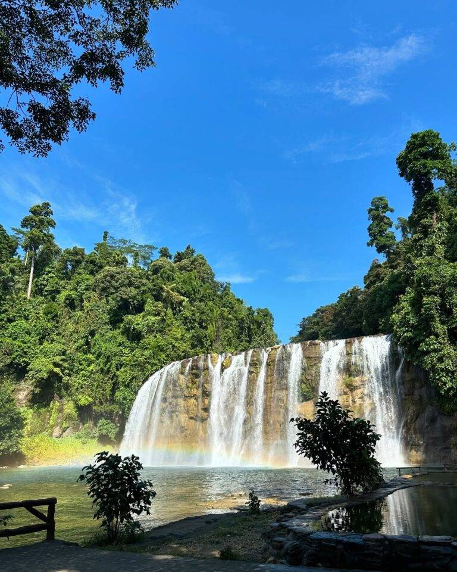 |
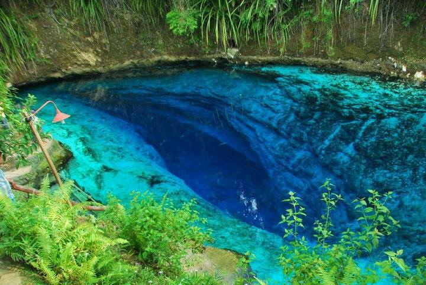 |
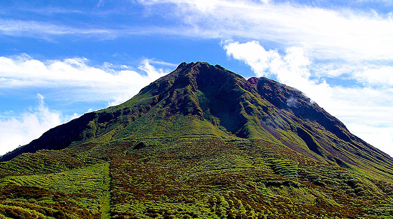 |
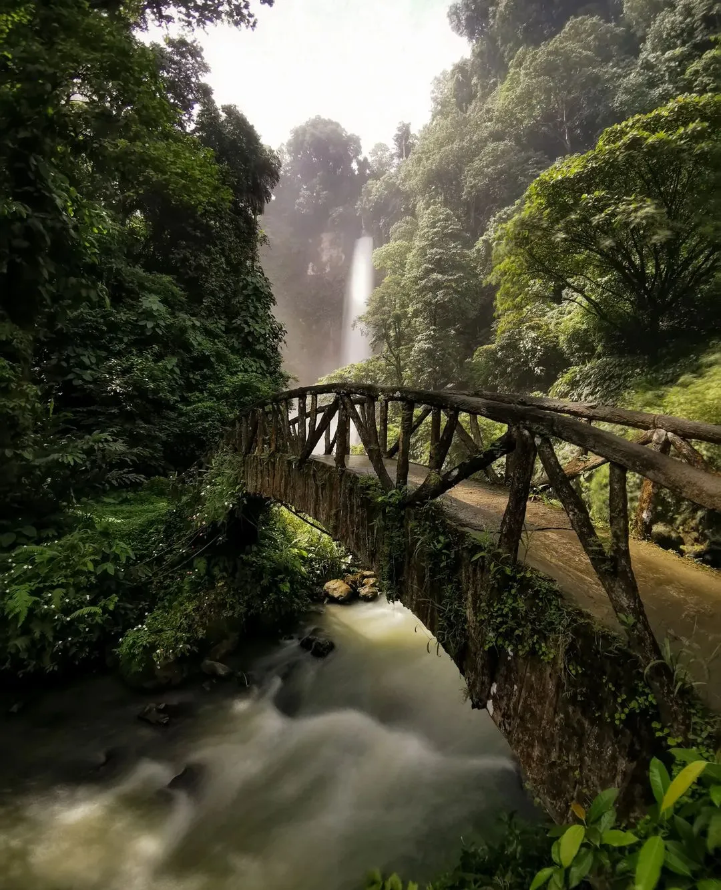 |
Siargao Island (Region XIII – Caraga) is one of the top tourist destinations in Mindanao, famous for its world-class surfing waves, pristine beaches, crystal-clear lagoons, and picturesque islands. Visitors can enjoy surfing at Cloud 9, island hopping, kayaking, and exploring its beautiful natural attractions. |
Tinuy-an Falls (Region XIII – Caraga) is a breathtaking multi-tiered waterfall located in Bislig City, Surigao del Sur. Often called the “Little Niagara Falls of the Philippines,” it is known for its wide curtain of cascading water, refreshing natural pools, and lush green surroundings. |
Enchanted River (Region XIII – Caraga) is a deep spring river in Hinatuan, Surigao del Sur, famous for its incredibly clear blue waters and mysterious depth. Tourists visit the site to swim, snorkel, and witness the daily fish-feeding activity in its serene environment. |
Mount Apo (Region XI – Davao Region) is the highest mountain in the Philippines and a favorite destination for hikers and nature enthusiasts. It is home to diverse wildlife, rich forests, and stunning landscapes, offering adventurous trekking experiences and panoramic views from its summit. |
Lake Sebu (Region XII – SOCCSKSARGEN) is a scenic destination in South Cotabato known for its tranquil lakes, majestic waterfalls, and the rich culture of the T’boli people. Visitors can experience ziplining over the waterfalls, boat rides on the lake, and cultural performances that showcase the area’s indigenous heritage |